Xem nhanh trong năm phút
- Trang Sơ đồ hệ thống: số liệu của từng tầng, từ tệp nguồn đến cảnh báo.
- Trang Trung tâm cảnh báo, chọn môi trường "Đánh giá · tập phát triển": mọi chi nhánh, mọi tuần; chọn dòng CN2 tuần 06/05 để mở trang truy vết.
- Trang Truy vết nguyên nhân: kết luận, đề xuất xử lý, doanh thu so với kỳ vọng, cây KPI; cuối trang, nút "Mở tệp gốc" đưa tới đúng dòng trong tệp nguồn.
- Trang Vận hành hằng ngày: một lượt đường ống với bảy ngày dữ liệu mới và hai cảnh báo nó tìm ra.
- Trang Kho dữ liệu: chạy câu SQL chỉ đọc trên Bronze, Silver, Gold.
01Bài toán
Chuỗi đồ ăn nhanh bán tại quầy, qua ứng dụng riêng và qua các sàn giao đồ ăn. Dữ liệu vận hành nằm ở máy POS, ứng dụng, báo cáo đối soát của sàn, sổ nhập kho, phiếu kiểm kê và máy chấm công, mỗi nơi một định dạng và một bộ mã. Khi doanh thu hay lợi nhuận giảm, quản lý chỉ thấy con số tổng và khó phân biệt một tuần có ngày lễ, nhiều ngày mưa với một sự cố vận hành.
Đề tài xét năm loại sự cố mà một nguồn dữ liệu đơn lẻ không cho thấy:
| Mã | Sự cố | Dữ liệu cần đối chiếu |
|---|---|---|
| P1 | Sàn tính hoa hồng cao hơn hợp đồng; đơn sàn không được nhập vào POS | Báo cáo đối soát GrabFood, ShopeeFood; POS; hợp đồng |
| P2 | Hao hụt nguyên liệu tươi vượt định mức | Sổ nhập kho, phiếu kiểm kê, lượng bán theo công thức món |
| P3 | Thiếu nhân sự ca tối, bếp quá tải, mất đơn | Chấm công; POS, ứng dụng; báo cáo sàn |
| P4 | Thất thoát nguyên liệu giá trị cao | Phiếu kiểm kê, sổ nhập kho, lượng bán |
| P5 | Gian lận tại quầy bằng hủy, hoàn hóa đơn | Hóa đơn POS theo từng thu ngân |
Fast&Fat là chuỗi giả định gồm 11 chi nhánh tại TP. Hồ Chí Minh. Dữ liệu vận hành của doanh nghiệp không công khai, nên một bộ mô phỏng đóng vai bảy hệ thống nguồn và sinh hai tập kịch bản sự cố có đáp án. Đường ống và các bộ phát hiện không đọc bộ mô phỏng hay đáp án; đáp án chỉ dùng để chấm kết quả.
02Kiến trúc
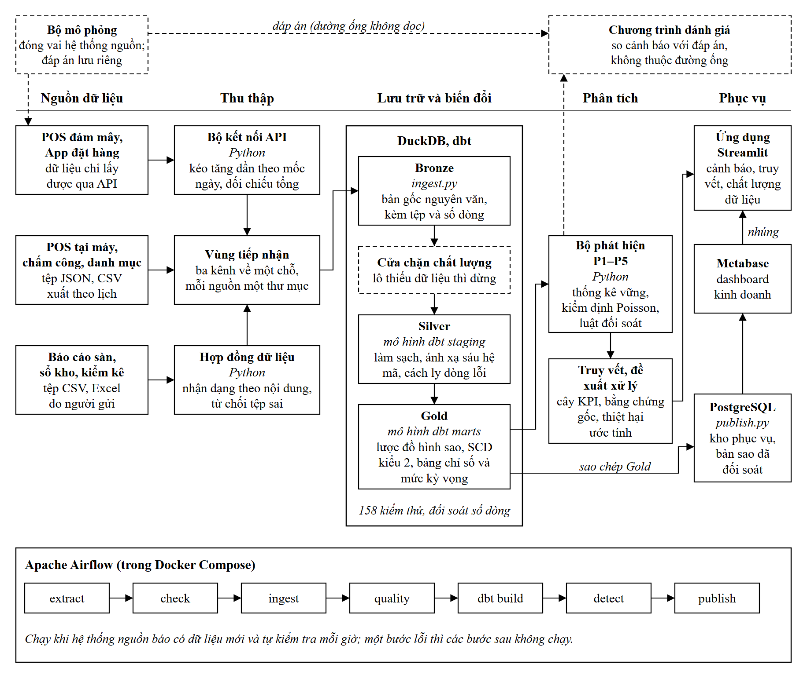
| Thành phần | Công nghệ | Lý do chọn |
|---|---|---|
| Thu thập | Python, FastAPI | Hai nguồn API cần kéo theo mốc ngày và đối chiếu tổng số bản ghi; tệp được kiểm tra theo hợp đồng dữ liệu trước khi nhận |
| Lưu trữ, biến đổi | DuckDB, dbt | Dữ liệu cỡ trăm megabyte, chạy trên một máy; SQL có kiểm thử, tài liệu và phả hệ |
| Kho phục vụ, báo cáo | PostgreSQL, Metabase | Nhiều người đọc đồng thời bằng tài khoản chỉ đọc; dashboard dựng bằng mã nên tái lập được |
| Ứng dụng | Streamlit | Các trang cần logic riêng: cảnh báo, truy vết, vận hành dữ liệu |
| Điều phối, đóng gói | Airflow, Docker Compose | Đường ống tự chạy khi có dữ liệu mới; cả hệ thống bật bằng một lệnh |
03Dữ liệu nguồn
Mỗi ngày, bộ mô phỏng sinh sự kiện của chuỗi đúng một lần: đơn hàng, ca làm, tải bếp, hàng nhập, hao hụt, kiểm kê. Mỗi hệ thống nguồn xuất phần nó thấy, kèm lỗi riêng: hai phiên bản POS ghi ngày và tiền khác nhau, ứng dụng ghi giờ UTC, sổ kho ghi tên nguyên liệu tự do và chèn dòng tổng cộng, máy chấm công ghi trùng lượt quẹt. Một sự cố đưa vào thế giới mô phỏng để lại dấu vết ở nhiều nguồn cùng lúc.
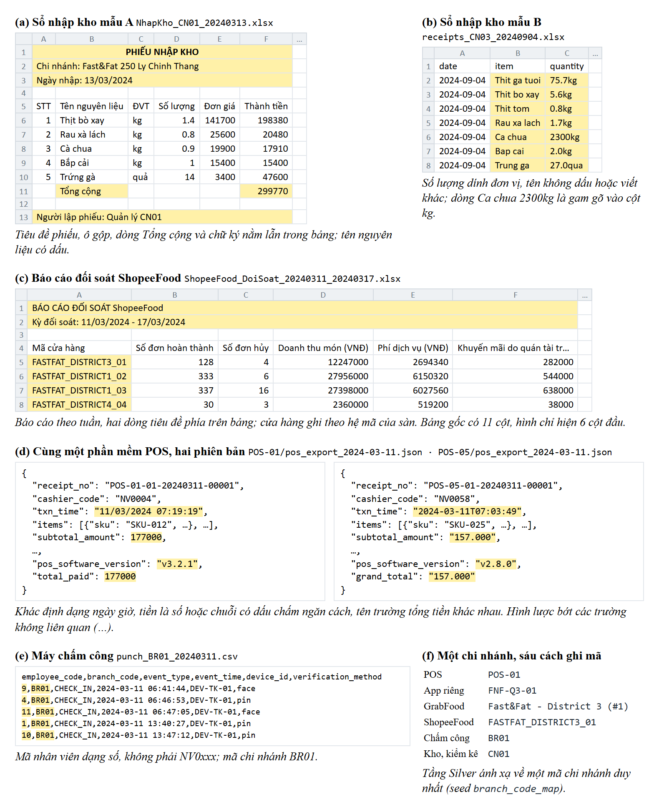
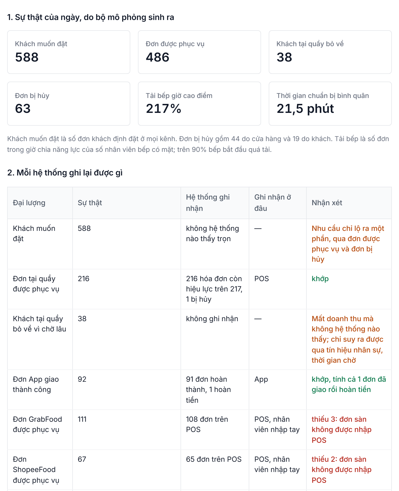
04Đường ống và kho dữ liệu
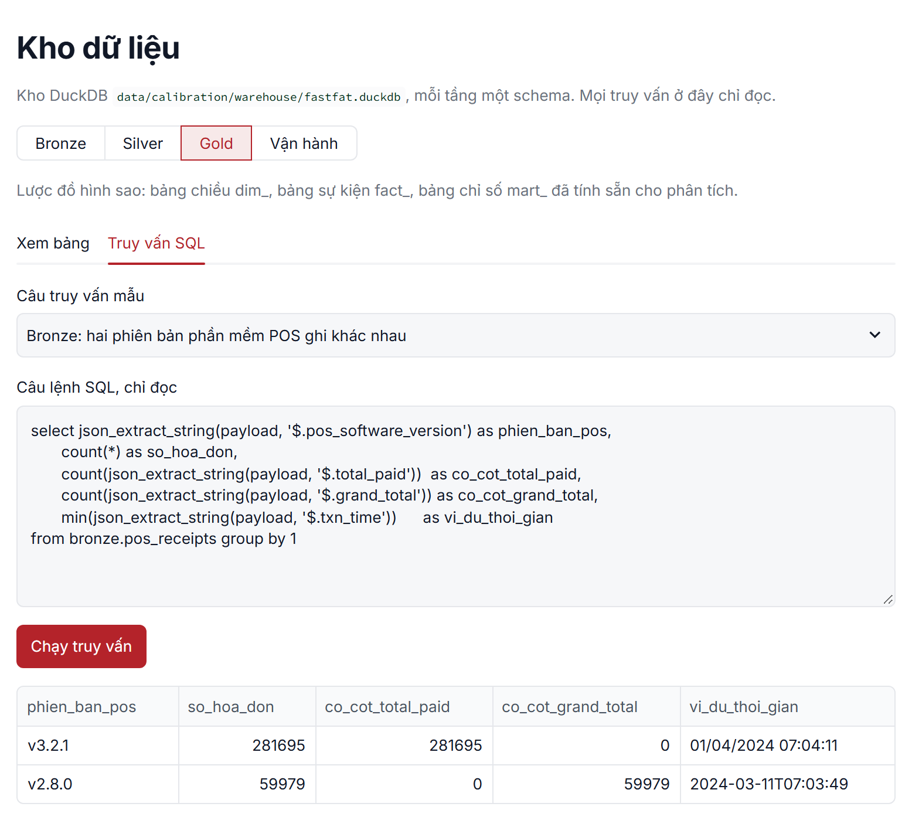
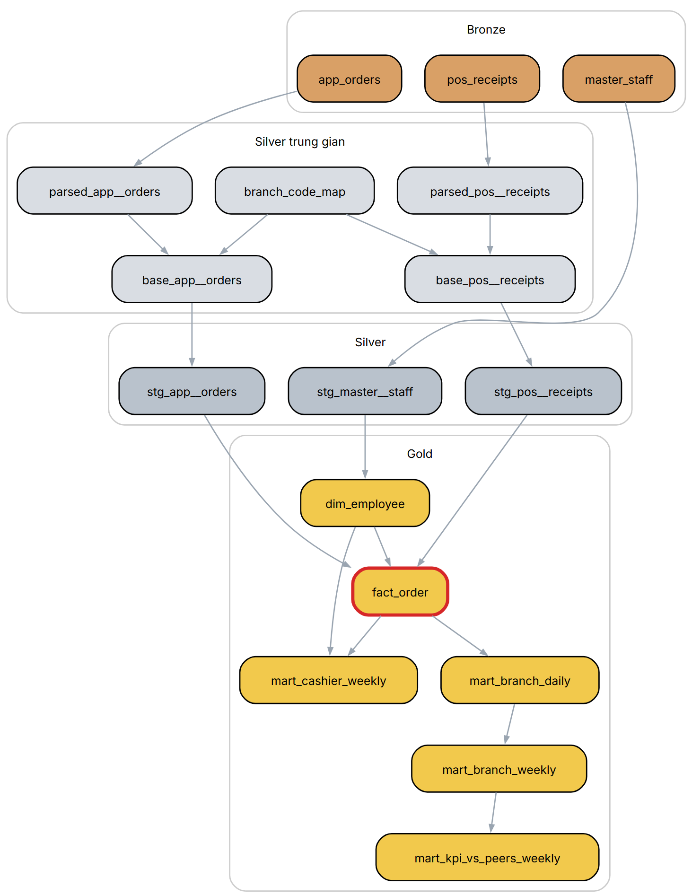
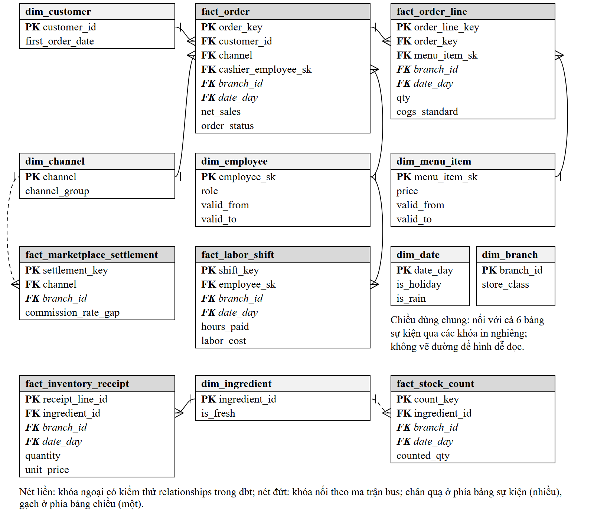
05Phát hiện và truy vết nguyên nhân
Mỗi chỉ số của một chi nhánh trong một tuần được so với mức kỳ vọng: trung vị các chi nhánh cùng hạng trong chính tuần đó, cộng độ chênh thường ngày của chi nhánh trong tám tuần trước. Ngày lễ, mưa, điều chỉnh giá tác động lên cả nhóm nên tự triệt tiêu. Năm bộ phát hiện chấm điểm từng nguyên nhân:
| Nguyên nhân | Cách phát hiện |
|---|---|
| P1a | Luật đối soát: tỷ lệ hoa hồng tính lại từ báo cáo sàn so với hợp đồng có hiệu lực |
| P1b, P5 | Kiểm định Poisson trên số đếm (đơn sàn thiếu trên POS; hóa đơn hủy, hoàn của từng thu ngân), hiệu chỉnh Bonferroni |
| P2, P4 | Hao hụt theo kỳ kiểm kê của từng nguyên liệu, so với các chi nhánh khác cùng kỳ bằng trung vị và MAD |
| P3 | Gộp năm tín hiệu: số ca bếp tối, thời gian chuẩn bị, cửa hàng tự hủy đơn, khách hủy vì chờ lâu |
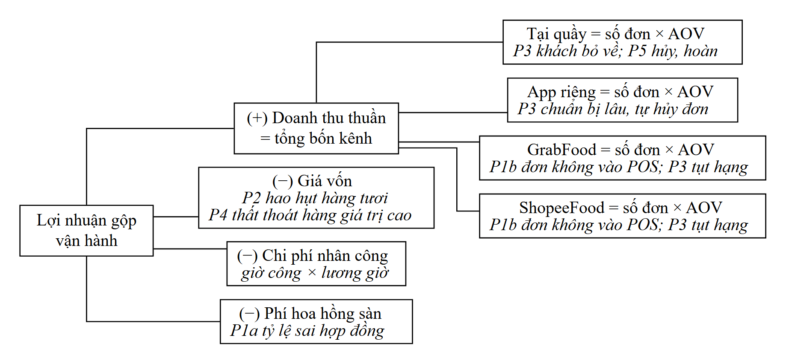
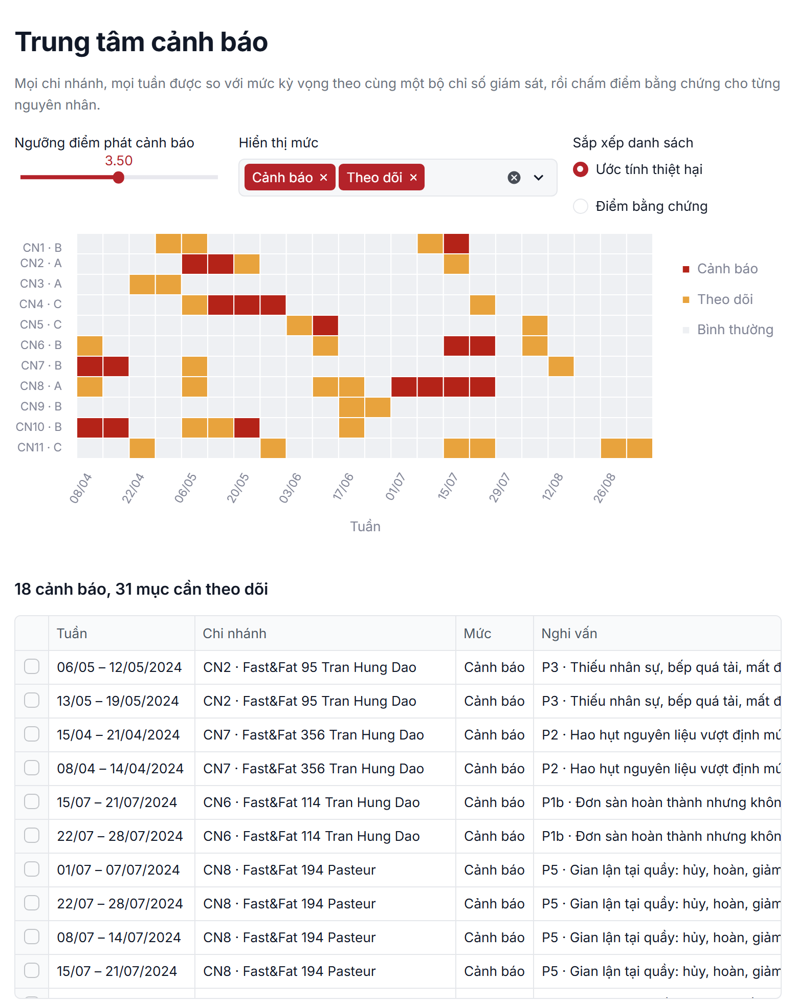
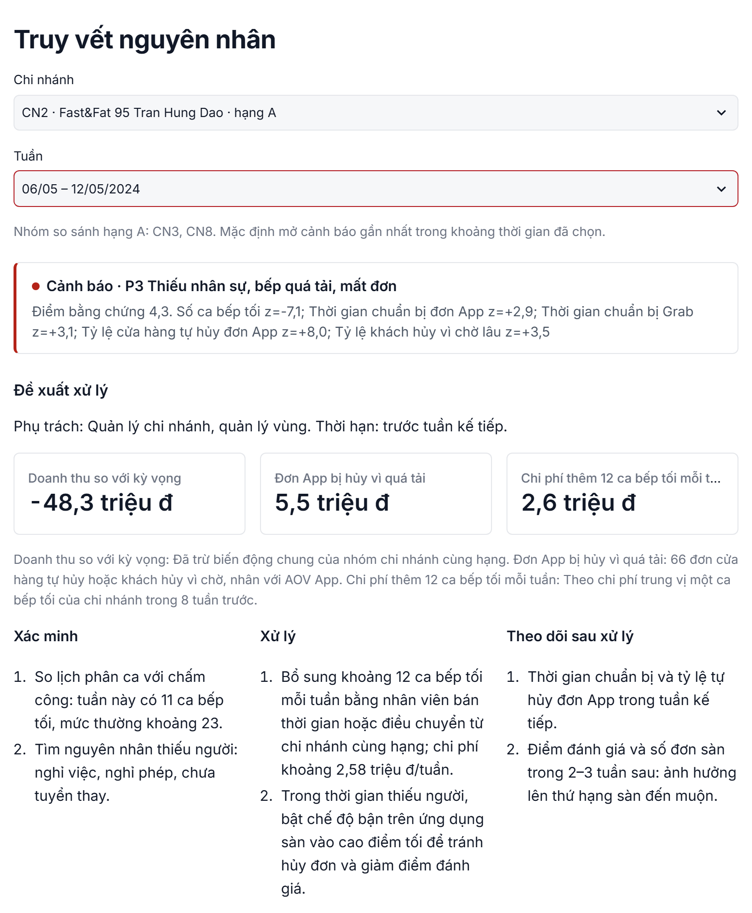
06Vận hành tự động
Hai DAG Airflow nối với nhau bằng Dataset: hệ thống nguồn ghi dữ liệu ngày mới, đường ống tự chạy bảy bước từ kéo API đến đưa sang kho phục vụ. Cửa chặn chất lượng dừng lượt chạy khi dữ liệu thiếu nghiêm trọng; khi đó người dùng vẫn thấy bản kết quả trước, không thấy kết quả dở dang.
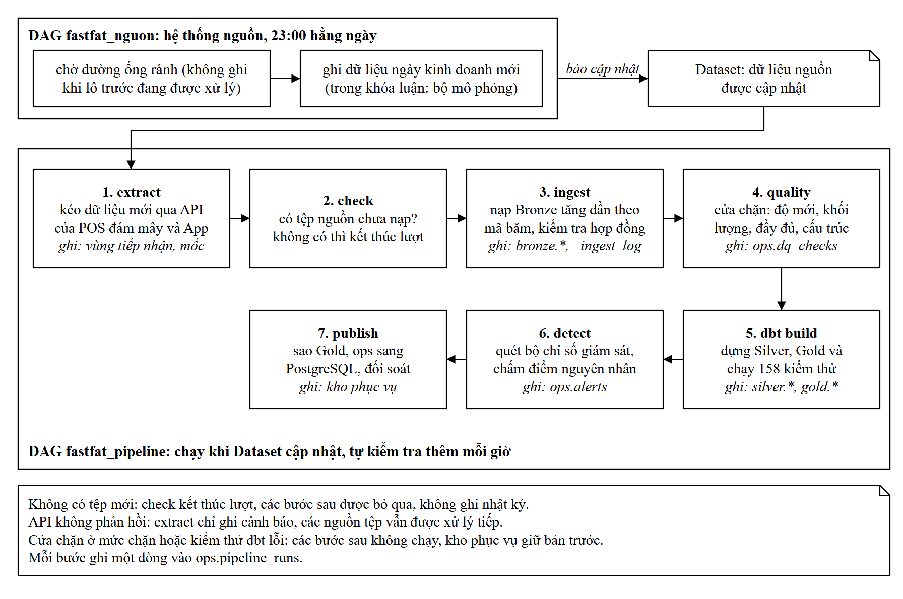
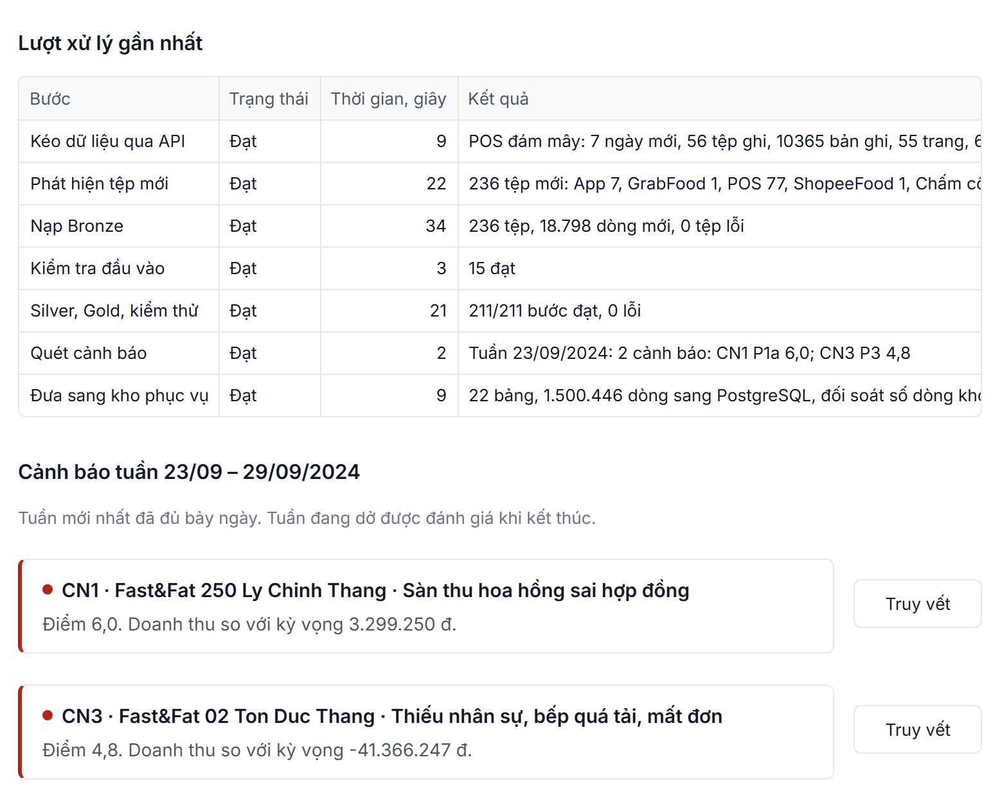
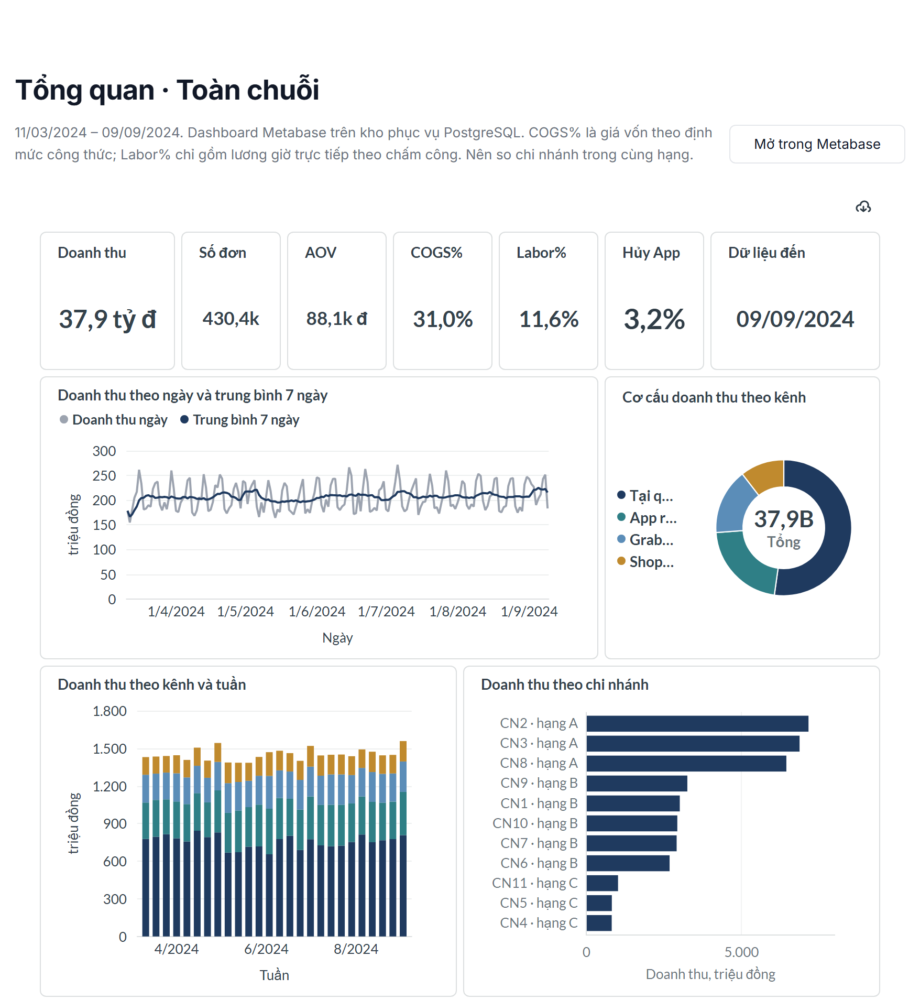
07Kết quả đánh giá
Mọi tham số được chọn trên tập phát triển. Cấu hình được chốt trước, rồi chạy tập kiểm tra đúng một lần.
| Phương pháp | Tập | Sự cố phát hiện | Precision | Recall theo tuần | F1 |
|---|---|---|---|---|---|
| Đề xuất | Phát triển | 5/6 | 0,72 | 0,87 | 0,79 |
| Đề xuất | Kiểm tra | 4/6 | 0,50 | 0,54 | 0,52 |
| Chỉ theo dõi doanh thu | Kiểm tra | 1/6 | 0,20 | 0,08 | 0,11 |
| Isolation Forest | Kiểm tra | 2/6 | 0,14 | 0,15 | 0,15 |
Ở mọi sự cố có tín hiệu, nguyên nhân đúng xếp hạng một. Thất thoát kho với nhịp kiểm kê hai tuần không phát hiện được ở cả hai tập; thiếu nhân sự nhẹ và gian lận nhẹ ở tập kiểm tra nằm sát dưới ngưỡng; nhóm chi nhánh hạng C chỉ có ba chi nhánh nên mức kỳ vọng nhiễu và gây phần lớn báo động giả.
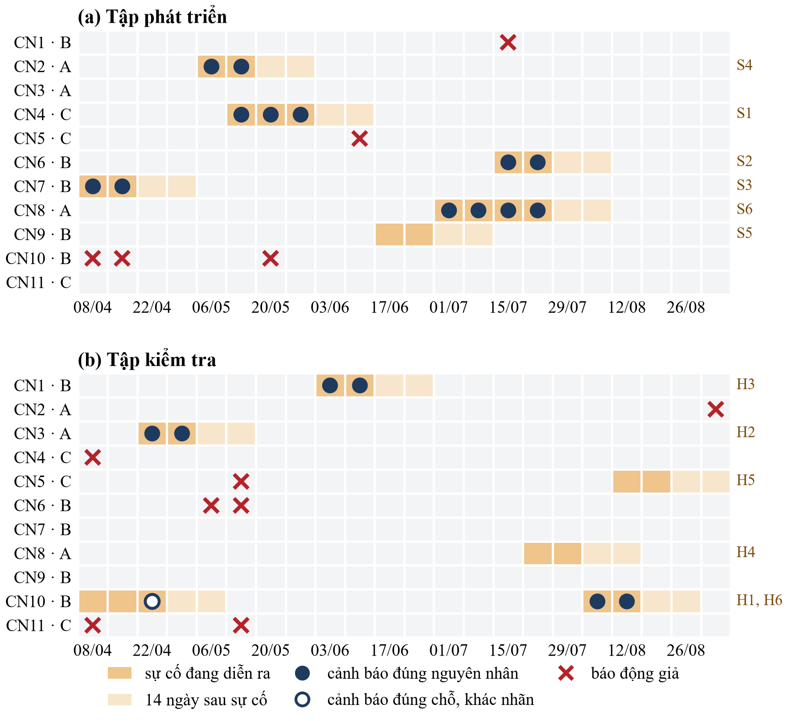
Chi tiết từng kịch bản, phân tích lỗi và độ nhạy: kết quả đánh giá, Chương 5 của báo cáo.
08Video trình diễn
Khoảng mười phút: từ tệp dữ liệu gốc qua các tầng xử lý, đến cảnh báo, truy vết và quay lại đúng dòng dữ liệu gốc; sau đó là kênh tải tệp lên và phần kiểm chứng.